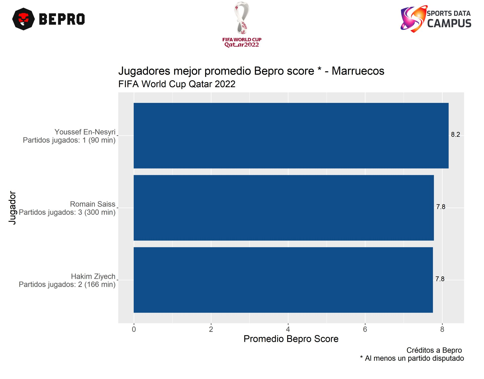
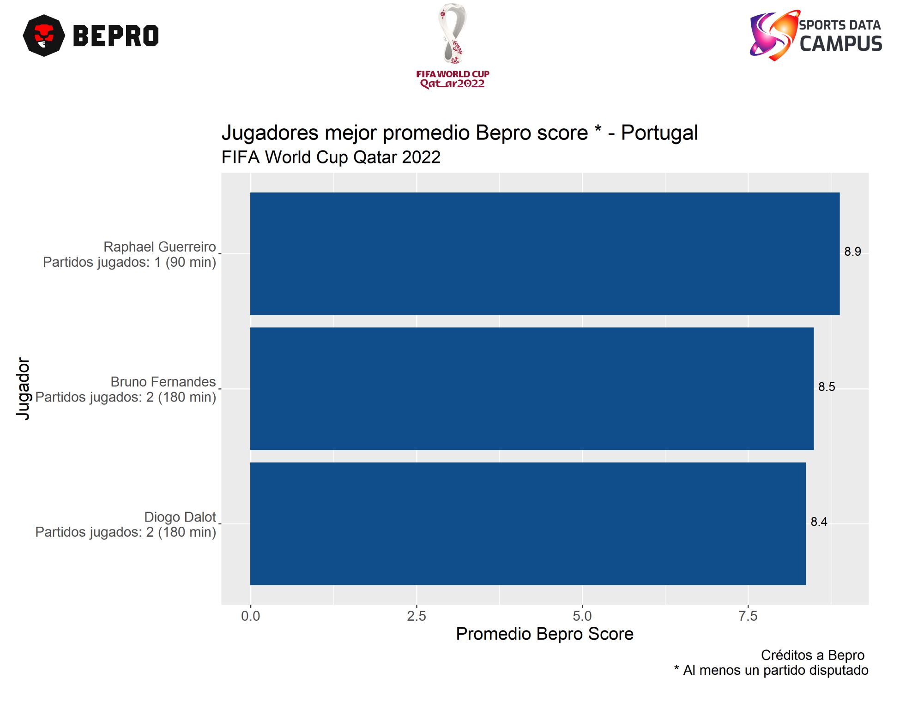
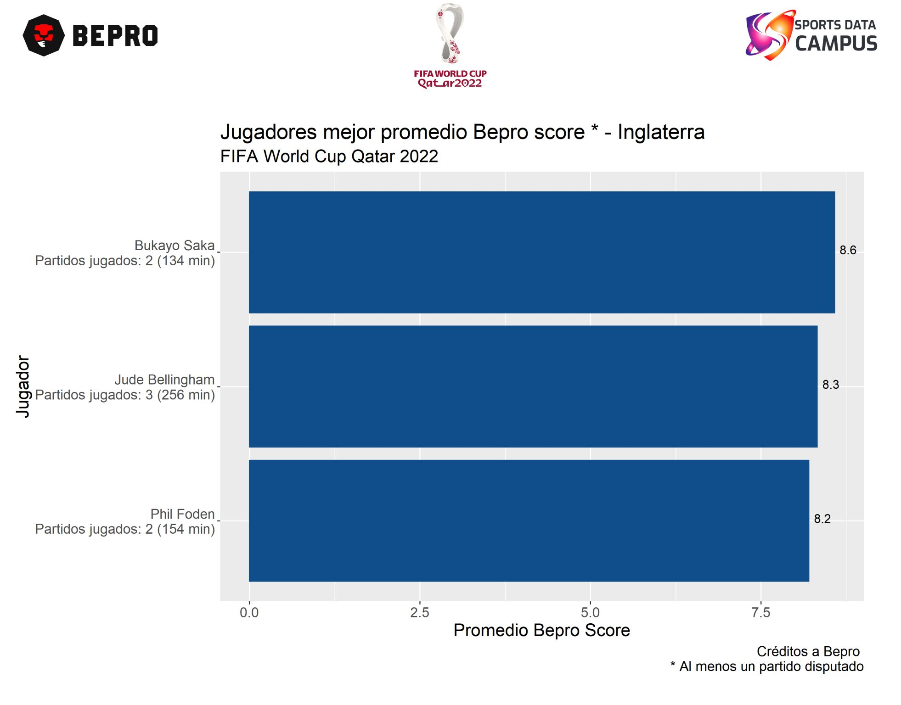

Gracias a la colaboración de Sports Data Campus y BEPRO fue posible contar con la información de todos los partidos de Octavos de final y fase de grupos del mundial Qatar 2022 ⚽.
El score que proporciona Bepro permite saber el desempeño de cada jugador, para los 4tos de final de la copa del mundial del día sábado estos son los jugadores a seguir,
📌 Marruecos vs Portugal
💡 En Marruecos se tiene a Youssef En-Nesyri, Romain Saiss y Hakim Ziyech.
💡 En Portugal se tiene a Raphael Guerreiro, Bruno Fernandes y Diogo Dalot.
📌 Inglaterra vs Francia
💡 En Inglaterra se tiene a Bukayo Saka, Jude Belligham y Phil Foden.
💡 En Francia se tiene a Kylian Mbappe, Theo Hernandez y Eduardo Camavinga.